Vacasa · 2019–2020
CX Innovation Roadmap + Design Sprint
Vacasa's customer experience agents changed dates, moved guests and fixed charges all day in an admin tool that was never built for a company that size. I turned a vague "improve CX" mandate into a two-phase roadmap, ran a design sprint with the agents who use the tool, and A/B tested two concepts. The result became the Reservation Management 2.0 redesign.
Client
Vacasa
Timeline
Jun 2019 – Mar 2020 · roadmap, sprint, A/B test
Role
Senior Product Designer · Sprint Facilitator
Team
Collective Trek: product manager, engineering lead, 3 engineers, QA, design intern
Platform
Internal admin tool (ResEdit) · desktop web
Focus
Strategy · Research · Facilitation
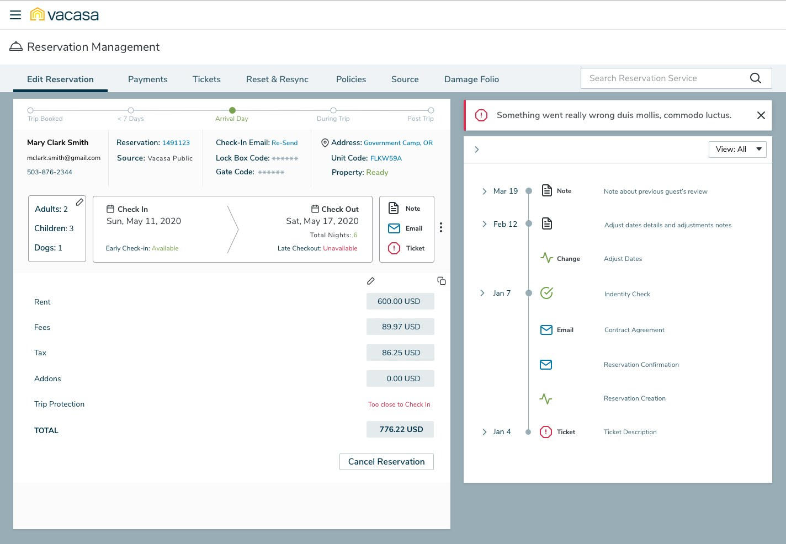
In one line
CX agents at Vacasa handle guests' reservation changes, and the most common ones (changing dates, cancelling, adjusting fees) took several pages of a legacy PHP tool to complete. I combined research and analytics into a roadmap, ran a design sprint compressed to two days, and tested two competing concepts with five agents. The final design lets an agent make and record a change on one page.
Context and the problem
Vacasa manages vacation rentals for homeowners across North America. Once a guest books, every change to the stay goes through a CX agent: different dates, an extra guest, a dog, a refund, moving to another unit. Agents did this in ResEdit, the reservation screens inside Vacasa's admin portal.
ResEdit had grown one module at a time. Our feature audit described it as "not built to manage thousands of regions and units." Changing dates meant one page for the dates, another for the finances, then a note typed by hand, all while the guest waited on the phone. Leadership asked for a better customer experience without defining it. My first job was to decide what that meant and what came first.
The constraints:
- A tool that couldn't go down. Reservation search alone logged more than 33,000 pageviews in one week of June 2019. Any change had to ship alongside the live tool, not replace it overnight.
- Money rules in the legacy code. Rent, fees, tax, trip protection and cancellation policies were calculated in the old PHP app. A redesign that touched dates also touched finance.
- Agents are on the phones. The people with the best knowledge of the problem were also the ones we couldn't take off shift for a week.
- A small team. I was the only designer, plus an intern, so we needed a process that got a cross-functional group to decide quickly and commit.
My role and what I owned
- I owned the research plan and synthesis, the journey and feature mapping, the V2/V3 roadmap, the sprint design, agendas and facilitation, both A/B concepts, the test protocol and sessions, and the final Reservation Management 2.0 design and prototype.
- I partnered with the product manager on the product brief and on which features were must-haves, and with the sprint Decider, who had the final vote on which ideas moved forward.
- Our design intern helped with research logistics and synthesis, and engineering (the engineering lead, three engineers and QA) sized the concepts and owned the build and the move from legacy PHP to React.
Guest names, contact details and amounts in the mockups are placeholder data. I've left out slides with real agent and team names and photos, and blurred a few details in the research captures.
Goals, and how we'd know
The sprint opened by agreeing on a long-term goal, which we broke into four measures:
- Fewer hops per change. Date changes, cancellations and fee adjustments happen without leaving the reservation. Measured by steps and time per workflow in the A/B test.
- No mental math. The tool calculates the financial effect before the agent commits. Measured by finance corrections after changes.
- The whole stay at a glance. Guest, stage and history on one screen. Measured by how often agents opened a second page during testing.
- Every change leaves a trail. Measured by the share of adjustments with a note attached.
Research, and the three things that changed direction
I ran four studies (an admin survey on the current experience, a usability evaluation of reservation finances, and a usability survey and test of reservation search) and paired them with Google Analytics and Hotjar heat maps for the dashboard and search. Before the sprint I also interviewed five agents about their day. Three findings shaped the direction.
1. The pain was concentrated in the four tasks that move money
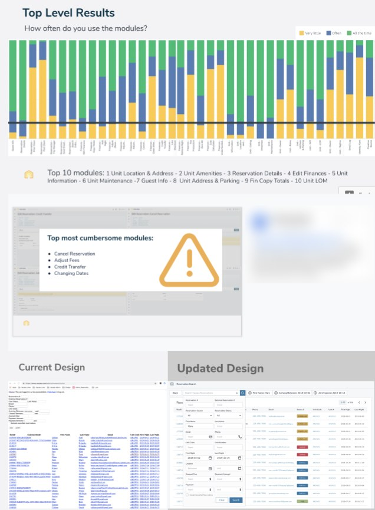
The most frequent reads were unit location, amenities and reservation details. The most painful writes moved money. That split drove the layout: keep the facts agents read constantly in view, and bring the four hard tasks up to the top level.
2. Search was used as a lookup, not a query builder
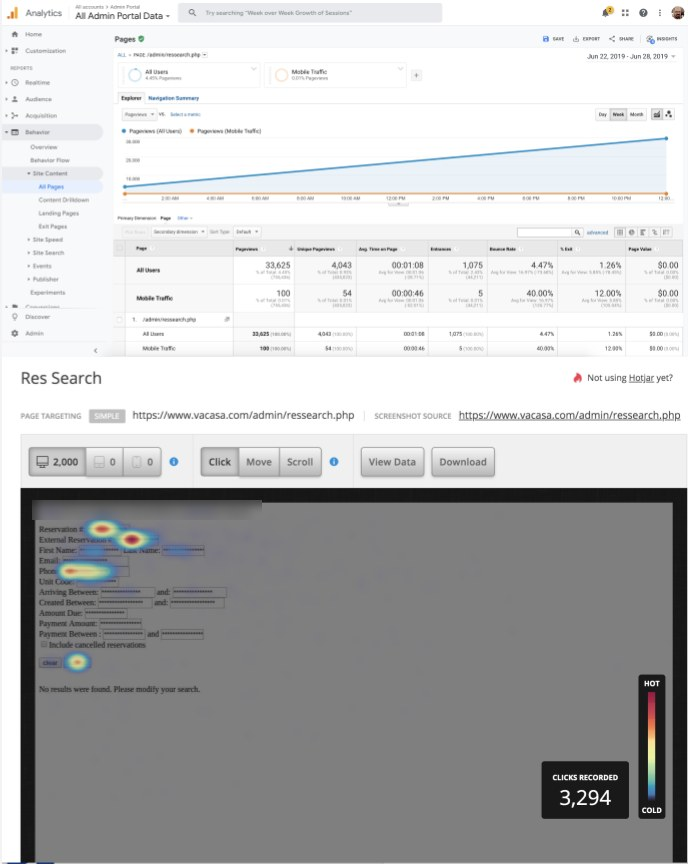
Agents weren't building queries. They had one identifier from the caller and wanted the reservation. So the first V2 fix was one smart field for phone, Vacasa or partner reservation number, with optional filters behind it.
3. Agents think in stages of the stay, not in modules
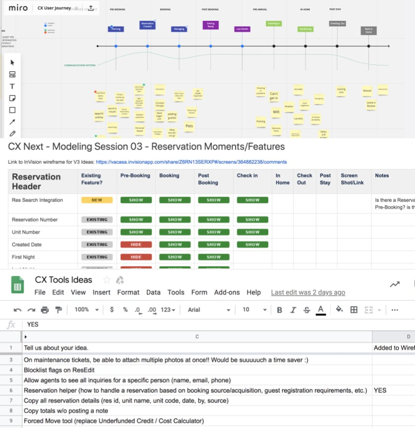
In interviews, agents described calls by where the guest was: not arrived yet, in the house, checked out. The tool showed every module the same way regardless. Mapping fields to stages showed that what an agent needs depends on when the guest calls, which became the trip-stage stepper at the top of the final design.
Strategy and the decisions that mattered
Decision 1: Split the roadmap into "fix" and "innovate"
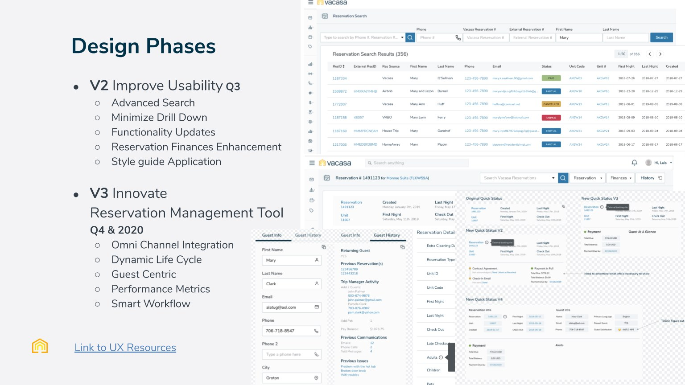
Rather than jump straight to the next-generation tool, I argued for two tracks. V2 fixed proven problems quickly, which earned agents' trust and gave engineering a low-risk start on React. V3 held the ideas that needed more certainty first, and the sprint was how we got it.
Decision 2: Compress the sprint from five days to two
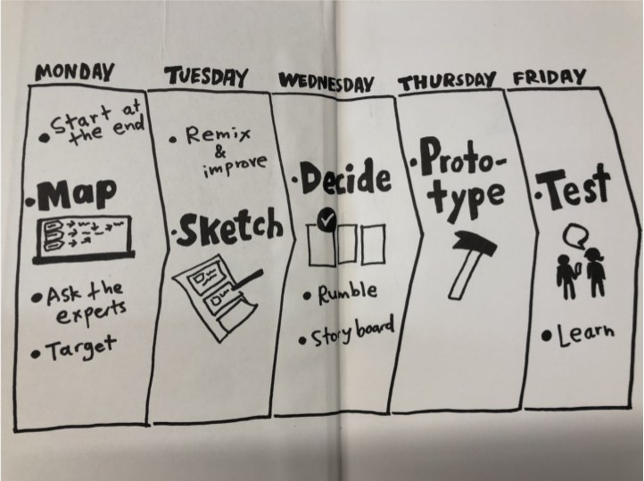
Taking agents and ops leads off the phones for a week would have hurt the very experience we were trying to fix. So I restructured it:
- Ask the experts in advance. The research and five agent interviews were done, so Day 1 opened with a 30-minute readout instead of a day of discovery.
- Day 1, Diverge: journey gap-filling, a "what's on your radar" dot vote, storyboards.
- Day 2, Converge: storyboard review, dot voting with a five-dot Decider supervote, paper prototypes in small groups.
- Prototype and test afterwards, as hi-fi click-throughs, with the same five agents.
The risk was shallow decisions from less time together. The votes kept the group converging, and testing outside the room meant real agents rather than whoever was free on a Friday.

Decision 3: Agree on must-haves before drawing screens
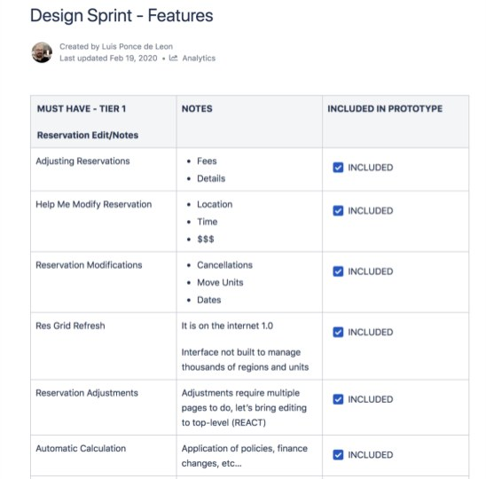
Sprints produce lots of ideas and no priorities. I turned the output into a tiered feature list with the reasoning for each item, which gave engineering and the PM one document to argue with instead of forty sticky notes.
Decision 4: Test the disagreement, not a compromise
The room split on how much the page should show: everything visible, or a quiet summary of what an agent could act on. Instead of a compromise nobody had asked for, I built both and let agents choose.
Design process and solution
From paper to two concepts
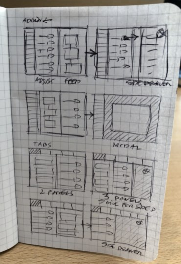
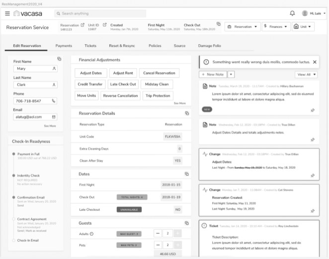
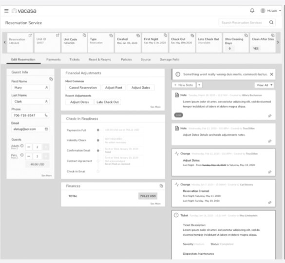
The final design: one change, one page
Reservation Management 2.0 takes one position: the reservation stays on screen, and every change happens in a panel beside it. Here's the change-dates workflow that used to span several pages: pick dates, preview the money, confirm, record it.
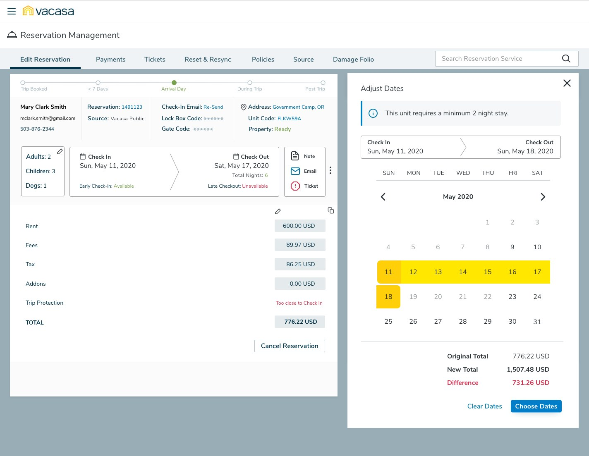
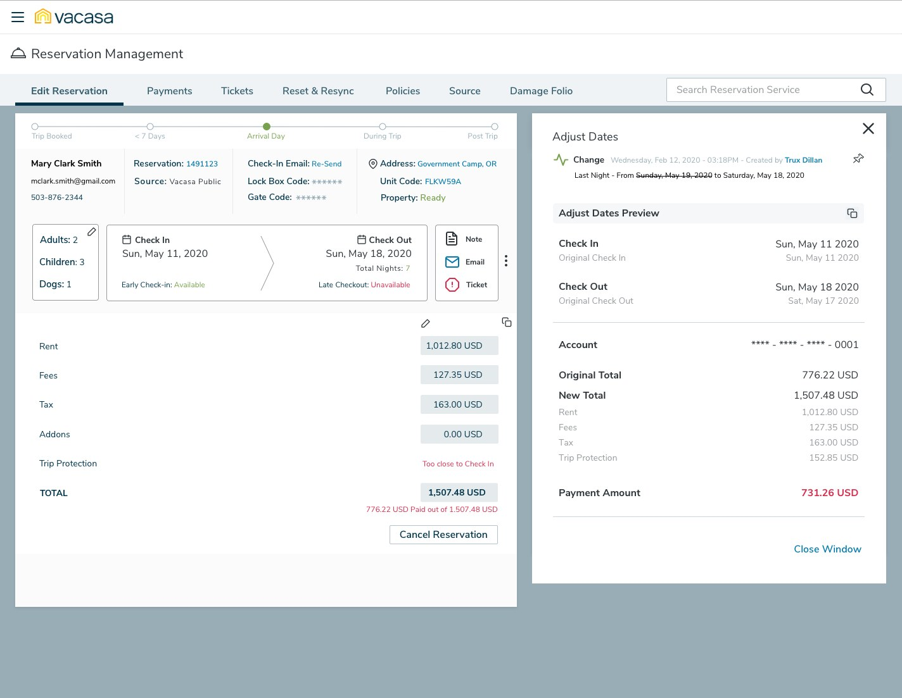
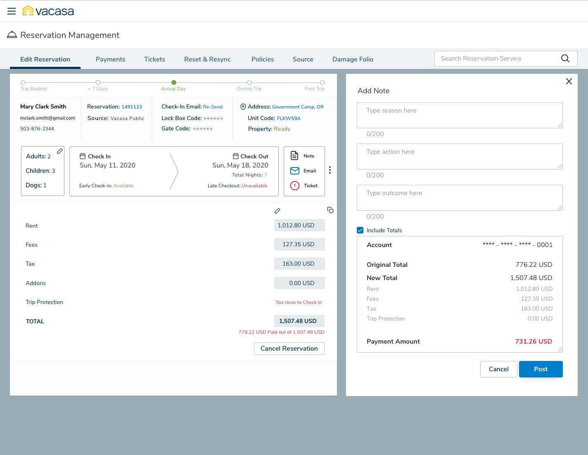
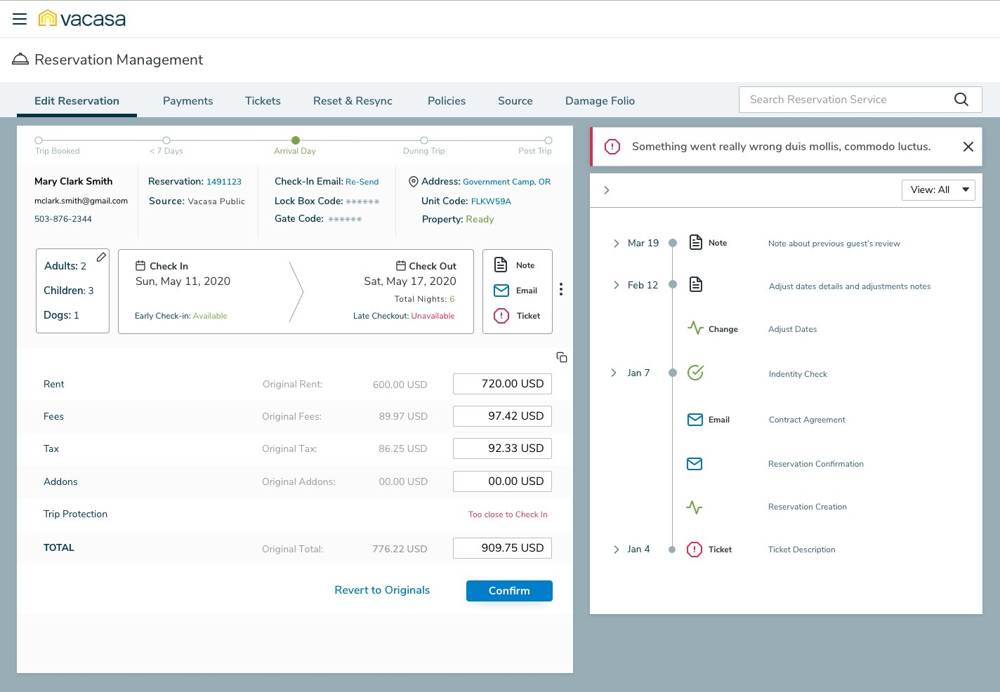
Validation and iteration
I ran moderated remote sessions with the five agents over one week in March 2020, walking the main workflows in both prototypes with screen sharing, recorded and transcribed.
We thought more on screen meant fewer clicks. It meant more hunting.
We thought Design A would win. Agents had complained about digging through pages, so putting everything on one screen, including the booking grid, all the details and every adjustment button, looked like the fix. We learned that on a live call agents scan for three or four facts: who the guest is, when they're staying, whether they've paid and whether they're ready to check in. Design A made those compete with everything else. Design B's summary was faster to read, but hid the history agents relied on to understand what the last agent had done. So we combined them: B's compact facts and stay card at the top, and A's feed turned into a dated timeline that you can filter and pin.

Notes had to be part of the change, not an extra step
The change-dates workflow we mapped had a note at three different points, and all three were optional. On a live call, optional steps are the first to go. So the final design treats the note as part of the change: a prompt when the change is confirmed, a structured form, and the totals already attached.
Outcome and impact
The A/B test finished in March 2020, just as travel shut down. I don't have post-launch usage data for this work, so the evidence below is what the process produced and how it changed the plan.
- A roadmap leadership could act on. The vague "improve CX" mandate became a V2 and V3 plan, with the V2 search and finance fixes scheduled first.
- Every Tier 1 must-have in the prototype. Adjusting reservations, modifications, the grid refresh, top-level editing and automatic calculation were all built into the click-through prototype.
- From several pages to one. Changing dates, cancelling and adjusting finances now happen in a side panel over the reservation, with the financial impact calculated before the agent commits.
- Agents shaped the design. The same five agents were interviewed before the sprint and tested the result after it. Features like attaching totals to a note came straight from their ideas sheet.
The concepts validated here became the Reservation Management 2.0 redesign.
What I'd do differently
- Record a baseline first. We had heat maps and survey scores but no timed baseline for the four cumbersome workflows, so we could compare A with B, but not either with the tool agents actually used.
- Bring finance into the room. Automatic calculation was the most valued feature and the most dependent on rules I didn't own. Having someone from finance in the sprint would have caught policy edge cases, like trip protection close to check-in, before they reached the prototype.
- Test beyond the sprint group. The five agents we tested with had helped shape the concepts, which made them great collaborators and biased testers. A second round with newer agents would have tested how easy the design is to learn, not just whether our collaborators preferred it.
The broader lesson: a sprint doesn't have to be five days, but it does need the right people. Compressing the format was fine. Keeping the agents in it was what gave the output credibility with the business.